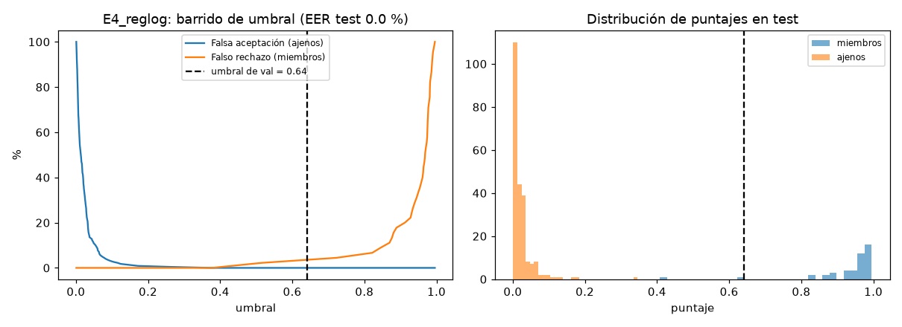

Qué se entrenó, con qué datos, qué tan bien funciona y cómo viaja una frase desde "Hola Thonny" hasta el clic del relé. Todas las cifras salen de los scripts del proyecto (carpeta resultados/) y del registro de las pruebas en vivo (logs/thonny.log).
Cada frase pasa por estos pasos en orden. Los modelos corren en el portátil (GPU RTX 3050); la ESP32 pone el parlante y los relés.
En dos pasos: "Hola Thonny" → Thonny contesta "Dime, ¿qué necesitas?" → en los 6 s siguientes la misma persona dice "prende la luz". También funciona todo en una frase: "Hola Thonny, apaga el ventilador".
Los audios de WhatsApp se cortaron en frases con Whisper y cortes por energía. Cada clip quedó en una sola partición: train (entrenar), val (escoger el umbral) o test (medir al final). El Audio 5 nunca se usó para entrenar; un chequeo en el código detiene todo si un clip de test se cuela.
Voces ajenas: para que Thonny aprenda a decir "no te conozco" se usaron 33 hablantes colombianos del corpus público OpenSLR SLR72, pasados por un códec tipo WhatsApp para que sonaran como los audios de los miembros, más 264 impostores sintéticos (voz clonada diciendo "Hola Thonny" y comandos). 6 hablantes públicos se apartaron solo para test.
Se compararon 3 experimentos y 2 clasificadores sobre la huella ECAPA. E1: 1 clip por persona. E2: todos los clips de train. E4: E2 + 3 copias alteradas de cada clip (ruido, volumen, filtro de parlante y eco). E3 (entrenar con el micrófono INMP441) no se hizo porque no hubo grabaciones con ese micrófono. El umbral se escoge en val, donde falsos rechazos = falsas aceptaciones.
| Exp. | Clasificador | Clips miembros | Umbral | Aceptados | Impostores | EER |
|---|---|---|---|---|---|---|
| E1 | coseno | 3 | 0,223 | 97,8 % | 4,2 % | 2,2 % |
| E1 | reglog | 3 | 0,083 | 100 % | 2,1 % | 0,2 % |
| E2 | coseno | 115 | 0,393 | 93,3 % | 0 % | 0 % |
| E2 | reglog | 115 | 0,521 | 97,8 % | 0 % | 0 % |
| E4 | coseno | 460 | 0,365 | 93,3 % | 0 % | 0,2 % |
| E4 | reglog | 460 | 0,641 | 95,6 % | 0 % | 0 % |
modelos/hablante.joblib): E4 con regresión logística. Se eligió E4 porque los aumentos lo preparan para el ruido y el parlante del montaje real.
pc/evaluar.py. Izquierda: al subir el umbral bajan las falsas aceptaciones (azul) y suben los falsos rechazos (naranja). Derecha: puntajes en test; los ajenos (naranja) quedan cerca de 0 y los miembros (azul) cerca de 1, con un hueco grande en medio.El modelo se entrenó con audios de celular. Con clips de celular y con el micrófono INMP441 de la ESP32 los miembros sacan más de 0,8. Con el micrófono del portátil el sonido cambia y los puntajes caen a 0,03–0,6, así que con el umbral original (0,641) Thonny ignoraba a todos.
logs/thonny.log el 13 de octubre. Líneas: umbral original 0,641 y umbral actual 0,03. "Voz no miembro" son frases dichas por alguien que no es de los 3 (incluye un impostor sintético).Ajustes actuales en config.yaml: umbral_thonny: 0.03 y verificar_comando: false. El "Hola Thonny" se verifica; el comando de los 6 s siguientes ya no, porque las frases cortas por el micrófono del portátil confundían a rocko con johan.
Costo: las voces no miembro sacaron 0,005–0,032, muy cerca del umbral. Para volver a un umbral alto hace falta que cada miembro grabe unas 5 frases con el micrófono que se use en la demo y reentrenar.
295 frases de ejemplo (30 por intención; 25 de saludo), escritas a mano y con errores típicos de Whisper ("prancha", "bantilador"). El texto se convierte en rasgos de palabras (1–2) y de letras (2–5), y una regresión logística escoge la intención. Si la confianza es menor a 0,5 Thonny responde "No te entendí".
F5-TTS (checkpoint en español jpgallegoar/F5-Spanish) clona cada voz a partir de un clip de referencia: cristian toma 1, johan toma 2, rocko toma 1. Cada respuesta se generó hasta con 5 semillas y se guardó la primera que Whisper entendiera al 95 % o más. "Thonny" se escribe "Toni" para que se pronuncie bien.
| Persona | Respuestas | Inteligibilidad | Parecido propio | Parecido a otros |
|---|---|---|---|---|
| cristian | 10 | 99,5 % | 0,616 | 0,186 |
| johan | 10 | 100 % | 0,586 | 0,118 |
| rocko | 10 | 99,8 % | 0,554 | 0,163 |
MicroPython en una ESP32-S3-N16R8 conectada por USB (COM12). Las 31 respuestas (1,3–2,1 s cada una) están guardadas en su flash; el PC solo le dice cuál reproducir.
| Pieza | Pines | Alimentación |
|---|---|---|
| Micrófono INMP441 | SCK 15 · WS 16 · SD 17 | 3V3, L/R a GND |
| Amplificador MAX98357 | BCLK 5 · LRC 6 · DIN 7 | 5V de la placa (USB) |
| Relés (activos en bajo) | IN1 10 · IN2 11 · IN3 12 · IN4 13 | VCC 3V3, JD-VCC 5 V del regulador |
| Tierra | Todas las GND unidas a la de la ESP32 | |
C:\Users\duvan\venvs\thonny\Scripts\python.exe pc\thonny.py --entrada pc --salida cable --reles cable
--entrada pc: escucha por el micrófono del portátil, en tiempo real.--salida cable: responde por el parlante de la ESP32.--reles cable: la ESP32 mueve los relés.python pc\subir_voces.py las vuelve a guardar en la placa (unos 3 minutos).